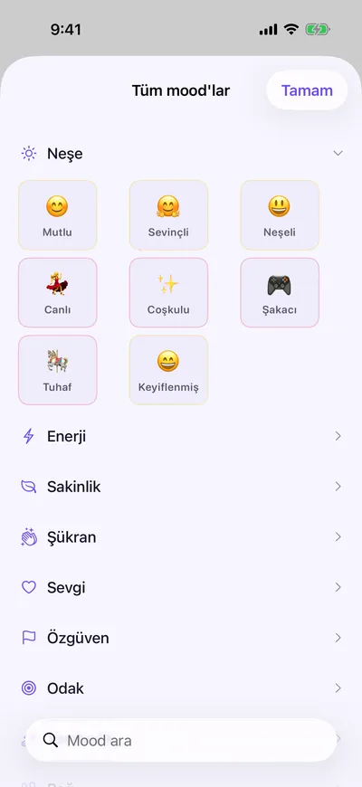
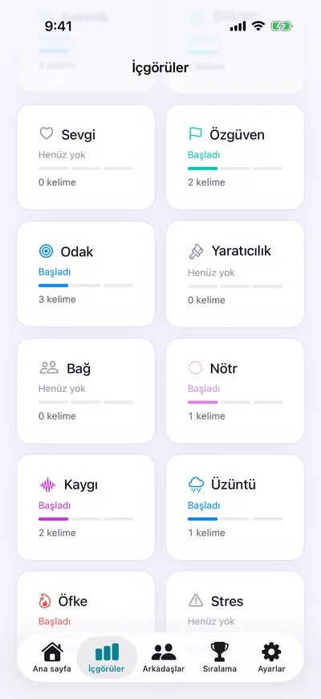
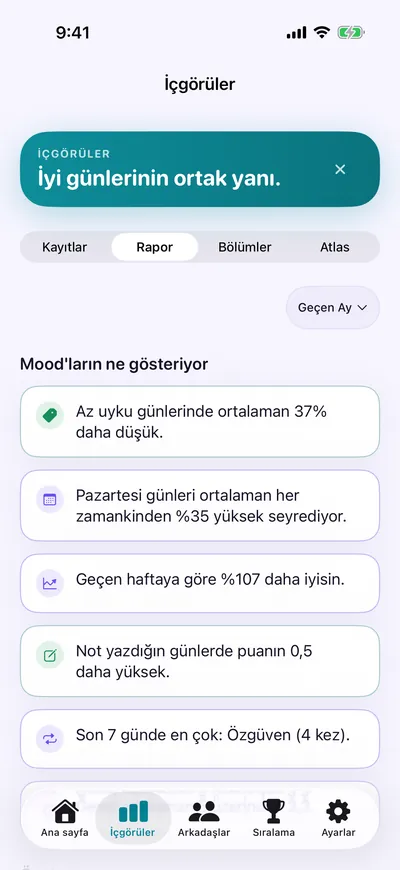
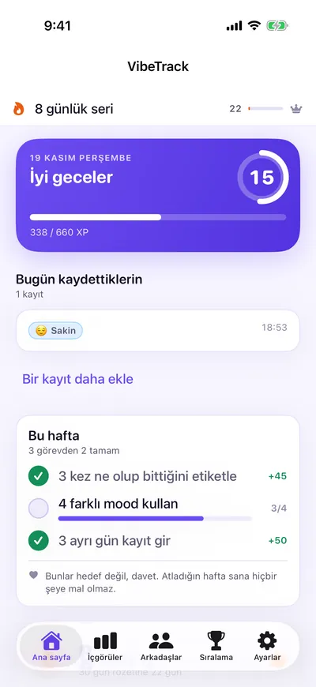
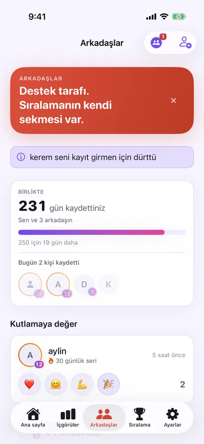
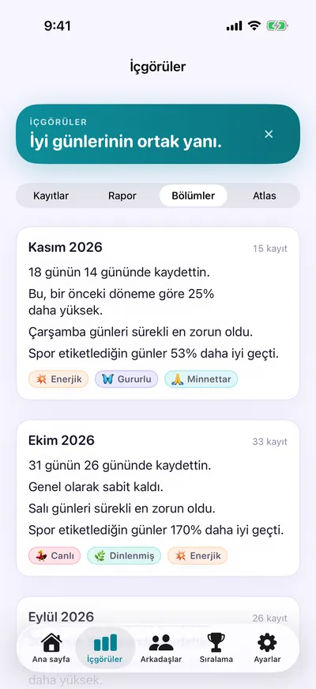

149 yolla söyle: nasılsın?
Ruh halini saniyeler içinde kaydet. Zamanla Vibe Track, ruh halinin hayatının hangi parçalarıyla birlikte değiştiğini gösterir.
İndirmesi ücretsiz. Premium isteğe bağlı.
- Hesapsız tam çalışır
- Notlar analitiğe gitmez
- Geri sayım yok, hiç

Beş surat bir salıyı taşıyamaz.
Çoğu uygulama birkaç surat verir. Vibe Track kelimeleri verir — “idare eder” sonunda huzursuz, gururlu ya da sessizce umutlu olabilir.
Vibe Track'te mutlu ve sakinden kaygılı ve bitkine kadar 149 duygu var.
Buradaki her duyguyu uygulamada kaydedebilirsin.
Sözlüğün, bir haritada.
On altı aile, zaten kaydettiğin duygularla doluyor. Test yok, kurulum yok — harita sen yazdıkça büyür.

Neden iyi günlerin iyiydi.
Vibe Track ruh halini uykunla ve kendi etiketlerinle yan yana koyar; farkı kendi günlerinden, sade rakamlarla gösterir.
- Uyku Apple Health'ten — yalnızca bağlarsan okunur
- Etiketlerin — takip etmek istediğin her şey
- Kendi kayıtlarındaki örüntüler — teşhis değil

Dinlen, ihtiyacın olduğu her an.
Seviyeler, haftalık görevler, seriler ve rozetler seni geri getirir. Atladığın hafta sana hiçbir şeye mal olmaz — geri sayım yok.
- Gelmenin karşılığı seviyeler ve haftalık görevler
- En iyi serini sayan seri rozetleri — ara vermek onları silmez
- Haftanın nasıl geçtiğine dair haftalık özet

Birlikte — yalnızca büyüyen ortak bir toplam.
Bir arkadaş ekle, birlikte seri tutun. Bir gün kaçırırsan hiçbir şey eksilmez; ortak toplam yalnızca artar.
- İstediğinde — ve yalnızca o zaman — kaydını paylaş
- Karşılığında kalp ya da sarılma gönder
- Zor bir günde anonim olarak güç iste

Bir ay, birkaç dürüst satırda.
Bölümler hayatının bir dönemini dönüp bakabileceğin bir şeye çevirir. Seansa götürmen mi gerekiyor? Temiz bir PDF al.
- Notların PDF'e girmez, sen eklemedikçe
- Bütün kayıtlarının CSV dışa aktarımı her zaman ücretsiz

Yazdığın hiçbir şey analitiğe gitmez.
Bir duygu günlüğü ancak içinde dürüst olabilirsen işe yarar. Bu yüzden çizgiyi önemli olan yere çektik.
Bu web sitesinde izleyici yok, çerez yok.
- Notların asla analitiğe gönderilmez
- Hiç hesap açmadan çalışır
- Apple Health yalnızca bağlarsan okunur
- Zor haftada teklifler azalır — karar telefonunda verilir
- Hesabını istediğin an Ayarlar'dan sil
Ücretsiz kullan. Derine inmek için Premium.
Her gün kayıt tutmak için gereken her şey ücretsiz, süre sınırı yok.
Ücretsiz 0 $
- Not ve etiketle tek dokunuşla kayıt
- 149 duygu ve Duygu Atlası
- Liste ve takvim görünümü
- Seviyeler, haftalık görevler, seriler ve rozetler
- Haftalık özet
- Arkadaşlar ve sıralama
- CSV dışa aktarma
- Hesapsız çalışır
Premium 4,99 $/ay · 29,99 $/yıl
- Uyku ve etiketlerle korelasyonlar
- Seansa götürülecek PDF
- Bölümler
- Bulut yedek
- Notlarda arama ve dilediğin tarih aralığı
- 280 karakter not sınırı yok
Fiyatlar ABD doları cinsindendir; bölgeye göre değişebilir ve App Store'da kendi para biriminle gösterilir. Abonelik, dönem bitiminden en az 24 saat önce iptal edilmezse otomatik yenilenir. Apple Kimliği ayarlarından istediğin an yönetebilir ya da iptal edebilirsin.
Bilmekte fayda var.
Hesap açmam gerekiyor mu?
Hayır. Vibe Track hesapsız tam çalışır. Hesap yalnızca başka insanları ya da bulutu içeren şeyler için gerekir: arkadaşlar ve yedek gibi.
Notlarımı kim okuyabilir?
Notların asla analitiğe gönderilmez. Arkadaş eklersen, paylaşmayı seçtiğin kayıtları, seviyeni ve üye olup olmadığını görürler.
Vibe Track tıbbi bir uygulama mı?
Hayır. Vibe Track tıbbi hizmet değildir ve teşhis koymaz. Gösterdiği şey kendi kayıtlarındaki örüntülerdir. Kriz anındaysan lütfen yerel acil servislere (Türkiye'de 112) başvur.
Premium ne kadar, nasıl iptal ederim?
Ayda 4,99 $ ya da yılda 29,99 $ (bölgeye göre değişebilir). Apple Kimliği abonelik ayarlarından istediğin an iptal edebilirsin; kaydettiğin her şey sende kalır.
Verilerimi alıp götürebilir miyim?
Evet. Bütün kayıtlarının CSV dışa aktarımı ücretsiz. Hesabını da Ayarlar'dan silebilirsin.
Bugün nasıl olduğunla başla.
Bir dokunuş. Tam oturan bir kelime. İlk adımın hepsi bu.
Vibe Track'i ücretsiz indir